| 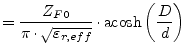 | (13.7) | |
| 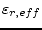 | 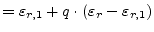 | (13.8) |
The twisted pair configurations as shown in fig. 13.2 provides good low frequency shielding. Undesired signals tend to be coupled equally into eachline of the pair. A differential receiver will therefore completely cancel the interference.
According to P. Lefferson [58] the characteristic impedance and effective dielectric constant of a twisted pair can be calculated as follows.
| 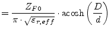 | (13.7) | |
| 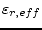 | 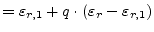 | (13.8) |
with
whereas 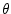 is the pitch angle of the twist; the angle between
the twisted pair's center line and the twist. It was found to be
optimal for to be between 20and 45.  denotes the twists per length. Eq. (13.9) is valid for film
insulations, for the softer PTFE material it should be modified as
follows.
denotes the twists per length. Eq. (13.9) is valid for film
insulations, for the softer PTFE material it should be modified as
follows.
| 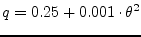 | (13.10) |
Assuming air as dielectric around the wires yields 1's replacing
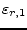 in eq. (13.8). The wire's total
length before twisting in terms of the number of turns  is
is
| 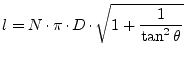 | (13.11) |
The propagation constant  of a general transmission line is
given by
of a general transmission line is
given by
| 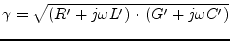 | (13.12) |
Using some transformations of the formula gives an expression with and without the angular frequency.
For high frequencies eq.(13.13) can be approximated to
| 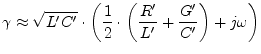 | (13.14) |
Thus the real part of the propagation constant  yields
yields
With
| 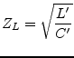 | (13.16) |
the expression in eq.(13.15) can be written as
| 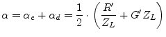 | (13.17) |
whereas 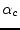 denotes the conductor losses and 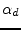 the dielectric losses.
The sheet resistance R' of a transmission line conductor is given by
| 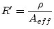 | (13.18) |
whereas  is the specific resistance of the conductor material
and 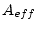 the effective area of the conductor perpendicular to the
propagation direction. At higher frequencies the area of the
conductor is reduced by the skin effect. The skin depth is given by
is the specific resistance of the conductor material
and 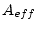 the effective area of the conductor perpendicular to the
propagation direction. At higher frequencies the area of the
conductor is reduced by the skin effect. The skin depth is given by
| 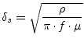 | (13.19) |
Thus the effective area of a single round wire yields
| 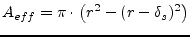 | (13.20) |
whereas  denotes the radius of the wire. This means the overall
conductor attenuation constant for a single wire gives
denotes the radius of the wire. This means the overall
conductor attenuation constant for a single wire gives
| 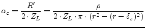 | (13.21) |
The dielectric losses are determined by the dielectric loss tangent.
With
| 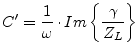 | (13.23) |
the equation (13.22) can be rewritten to
| 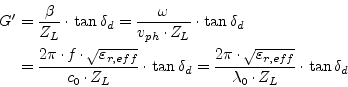 | (13.24) |
whereas 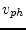 denotes the phase velocity,  the speed of light,
the speed of light,
 the effective dielectric constant and
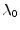 the freespace wavelength. With these expressions at hand
it is possible to find a formula for the dielectric losses of the
transmission line.
the effective dielectric constant and
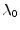 the freespace wavelength. With these expressions at hand
it is possible to find a formula for the dielectric losses of the
transmission line.
| 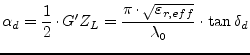 | (13.25) |
Transmission losses consist of conductor losses, dielectric losses as well as radiation losses. The above expressions for the conductor and dielectric losses are considered to be first order approximations. The conductor losses have been derived for a single round wire. The overall conductor losses due to the twin wires must be doubled. The dielectric losses can be used as is. Radiation losses are neglected.